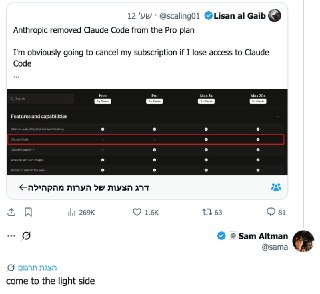
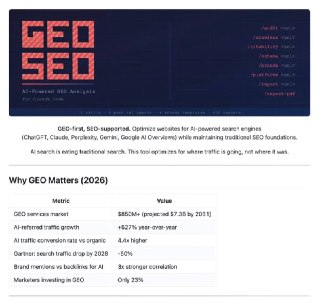
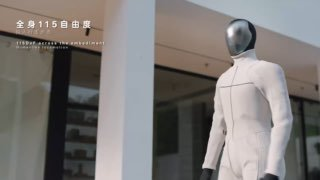
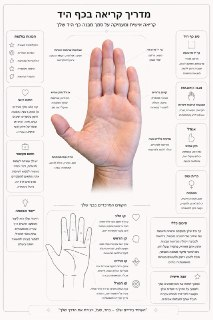
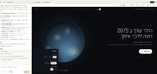
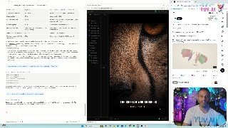
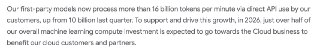
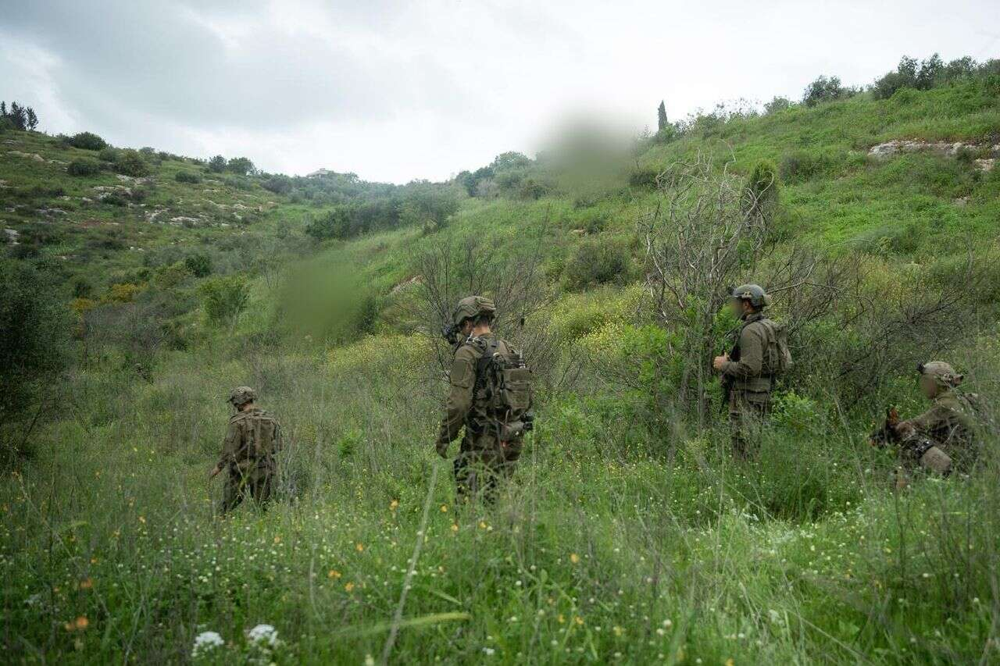
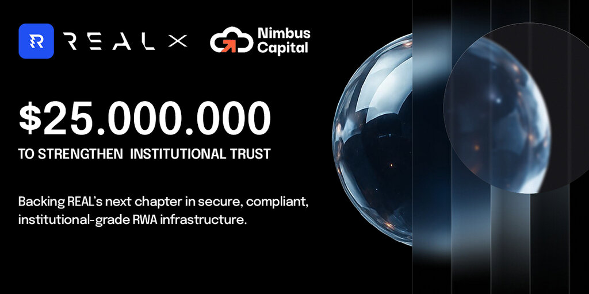
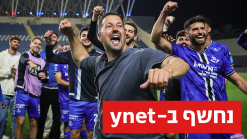

WIREDנמוכה28.04.2026, 00:00
Tim Cook was a great CEO, but he didn’t crack AI. It’s job number 1 for John Ternus.
אימות 1
Tim Cook was a great CEO, but he didn’t crack AI. It’s job number 1 for John Ternus.
Plus: Spy firms tap into a global telecom weakness to track targets, 500,000 UK health records go up for sale on Alibaba, Apple patches a revealing notification bug, and more.
בעקבות הדיווח על פגיעה בבלעדיות הענן, מניית מיקרוסופט יורדת בוול סטריט. OpenAI נערכת להתרחבות מול לקוחות ארגוניים ומשתפת פעולה עם אמזון. הקליקו לפרטים.
The cyber capabilities of AI models have experts rattled. AI’s social skills may be just as dangerous.
סגן נשיא ServiceNow וג'נרל מנג'ר ארמיס בריאיון בלעדי על הקמת מרכז הסייבר בישראל, מהפכת ה-Agentic AI והתחרות מול פאלו אלטו וקראודסטרייק.
30 מיליארד דולר נוספים, אם החברה תעמוד במדדי ביצוע מסוימים. החודש קיבלה Anthropic התחייבויות למימון חדש בסכום של עד כ-65 מיליארד דולר, כחלק מהמאמץ להישאר תחרותית מול OpenAI לקראת הנפקה ראשונה לציבור (IPO) פוטנציאלית.

חיבור יכול להתבצע ממש בקלות דרך Zapier. קיים קונקטור לקלוד דסקטופ וזה פשוט מושלם! אפשר לקבל תובנות בצורה ברורה, לחבר סקילים ולייצר טקסטים ומודעות מעוצבות בקלות יתירה (עם ננו בננה) - מה שאמור להוביל ליותר המרות ויישום יעדים עסקיים - ולהצדיק את השימוש בקלוד

תי עם AI ש״נחשף״ כשעוברים על התמונה עם העכבר ויצא ממש מגניב!
בסין פותח מודל מקביל ל-Mythos, שמיועד לחיפוש פגיעויות מסוג 0-day🎩💻 🇨🇳 המרכז לחקר סוגיות אבטחה ב-ETH Zurich פרסם מחקר חדש, שבו נמסר שסוכן בינה מלאכותית לחיפוש פגיעויות, שפותח על-ידי חברת 360, מבין המובילות בסייבר בסין, כבר מתקרב ברמת היכולות שלו למודל Claude Mythos של Anthropic.

לכאורה בלייב היום יכריזו רק על מודל התמונות החדש שכבר זמין לכולכם. ברשת מדברים על שחרור של GPT 5.5 ביום חמישי (לא הצלחתי לאמת את המקור) ביחד עם האפשרות לבניית סוכנים שירוצו 24/7 (סטייל OpenClaw רק בלי הכאב ראש של

אני רואה בשעות האחרונות כותרות כאילו אנתרופיק הולכת להסיר את הגישה ל-Claude Code ממנויי פרו (20$), אז בואו נעשה רגע סדר. מה שקרה בפועל זה שחלק קטן מהמשתמשים שבאים עכשיו לעשות את המנוי של 20 דולר רואים שלא מופיע שם גישה ל-Claude Code.

ה. לפי הפרסום, הרעיון הוא שאפשר לסמוך עליו יותר גם בעבודות קשות וממושכות, עם פחות צורך לפקח עליו כל רגע. בנוסף, אנתרופיק אומרת שהמודל קיבל שיפור משמעותי בראייה, כך שהוא מסוגל להבין תמונות ברזולוציה גבוהה בהרבה ולייצר תוצרים טובים יותר כמו ממשקים, מסמכים ומצגות.

הפוסט מציג טענת "חינם", אבל בלי אימות ברור מול המוצר הרשמי, ולכן צריך לראות בזה טענה שדורשת בדיקה.

ין 0 ל-100, דוח PDF מפורט ותוכנית עבודה שתעזור לכם לשפר את הביצועים. הנה הקישור שיגרום ל- המתחרים שלכם לבכות: GitHub - geo-seo-claude 😏 #AI_SEO #SEO_Optimization #בינה_מלאכותית #קידום_אתרים 📱 📱 📱

בסיס ה-KAI World Model שלו ואומן על כמויות אדירות של דאטה אגוצנטרי (egocentric data). הוא מסוגל לקפל בגדים, להשתמש בכלי עבודה, לטפל במשלוחים ובאיסוף מזון (טייק-אווי), ואפילו לסייע בטיפול בילדים, כשהוא מכסה טווח רחב של מטלות ביתיות.

הסגנון שאני רוצה לקרוסלה, וגם זה הפך לסקיל, מה שאומר שמעכשיו אוכל סופסוף ליצור קרוסלות בקלות! מוזמנים להציץ:

לי, אבל כמובן שכמו בהורוסקופ, זה מתואר באופן כללי וללא פרטים עמוקים מדי. תנסו בעצמכם ותכתבו לנו בתגובות – יש התאמה? הפרומפט: based on my hand, I want you to make a complete palm reading guide, analyze the palm, the style of the guide should be clean and minimalistic, thin lines, rounded
הדגם החדש Mk II. #IAI #כטבם 📱 📱 📱

הפוסט מציג טענת "חינם", אבל בלי אימות ברור מול המוצר הרשמי, ולכן צריך לראות בזה טענה שדורשת בדיקה.
הפוסט מנוסח בצורה שיווקית ומנופחת. העובדות שכדאי לקחת ממנו הן: וואו, תראו מה Nvidia עשתה: Nvidia שחררה מודל חדש שמייצר עולמות תלת-ממד מתמונה אחת בלבד — Lyra 2.0! 😱 הבעיה המרכזית עם מודלים של עולמות כיום היא מעין "אמנזיה".

תוכן ממומן: אין לראות באמור המלצה לפעולה כלשהי מטעם הערוץ

הפוסט מציג טענת "חינם", אבל בלי אימות ברור מול המוצר הרשמי, ולכן צריך לראות בזה טענה שדורשת בדיקה.

הפוסט מציג טענת "חינם", אבל בלי אימות ברור מול המוצר הרשמי, ולכן צריך לראות בזה טענה שדורשת בדיקה.

הפוסט מנוסח בצורה שיווקית ומנופחת. העובדות שכדאי לקחת ממנו הן: נתון מטורף! 75% מהקוד החדש בגוגל נכתב כיום ע״י AI.
הפוסט מציג טענת "חינם", אבל בלי אימות ברור מול המוצר הרשמי, ולכן צריך לראות בזה טענה שדורשת בדיקה.

הפוסט מציג טענת "חינם", אבל בלי אימות ברור מול המוצר הרשמי, ולכן צריך לראות בזה טענה שדורשת בדיקה.

הפוסט מנוסח בצורה שיווקית ומנופחת. העובדות שכדאי לקחת ממנו הן: אחרי אנתרופיק, גם OpenAI וגם גוגל משחררים פלטפורמה לעסקים לבניית סוכנים שמחוברים למידע וכלים ורצים 24/7.
לאחר העימות בין נשיא לבנון למזכ"ל חיזבאללה, תוגברה האבטחה סביב ביתו של סימון כרם, שצפוי להוביל את המשלחת הלבנונית במו"מ הישיר מול ישראל. במקביל, חילוקי דעות במפרץ לגבי עתיד היחסים בין לבנון לישראל
הצעת החוק של ח"כ עודד פורר לשלילת קצבאות ממשפחות המקיימות אורח חיים פוליגמי לא מתקדמת מאז שעברה בקריאה טרומית באופוזיציה מאשימים את הממשלה בעיכוב מכוון יו"ר הוועדה מיכל וולדיגר דוחה את הטענות ומדגישה כי מתקיימת עבודה במקביל במספר מישורים
בשם "ריבונות דיגיטלית" המשטר בטהרן מצמצם את הגישה לאינטרנט העולמי ומעביר מיליונים לרשת פנימית ומפוקחת כל קליק מזוהה והאנונימיות נעלמת עבור דור ה-Z מדובר בניתוק כואב שהופך לכלי שליטה יומיומי איך ייראה המאבק הבא כשהרשת עצמה הופכת לזירת הקרב?
קול אלן מקליפורניה ניסה לפרוץ את עמדת הביקורת הבטחונית והמגנומטרים שבפתח הקומה שבה נערך האירוע בבניין בוושינגטון, ופתח באש לעבר השוטרים. הוא הצליח לפצוע סוכן בשירות החשאי, לפני שנורה על ידי כוחות הביטחון ונלכד כשהוא חי.

הניסוח הזהיר יותר הוא: בעוד חיזבאללה מנסה לפגוע בכוחות צה"ל, נראה כי ישראל מגבילה באופן יזום את פעילותה לפעולות סיכול הגנתיות, ולא לפעולה רחבה לחיסול הארגון היעדכים המעודכנים: הסכם מדיני מוגבל לצד פיתוח פתרונות טכנולוגיים לאיום הרקטי
“This will no doubt be a controversial decision,” Sztorc wrote on X. “But I think it is necessary, and in fact, ideal.” Important: I've also devised a way that some can *invest* in this hardfork, now, before the fork-date, in

Two papers published this week have reignited debates about the risk posed by “Q-day” to the cryptography that underpins digital assets.

At a conference dedicated to the riskiest traders in finance, Miami's crypto scene appeared far different than during its pandemic-era boom.

Miami, Florida, 27th April 2026, Chainwire

Sydney, Australia, 24th April 2026, Chainwire
כוכב בית"ר ירושלים חש רגישות בשריר התאומים ועלול לא לקחת חלק במשחק מחר (20:00, טדי) מול הכחולים. אינו (אדום), קרבאלי (צהובים) יונה (פציעה) לא ישחקו

עדכון קצר סביב אחרי שהורחק מול הפועל פ"ת, החלוץ צפוי לעמוד לוועדת משמעת פנימית וככל הנראה לא ימשיך בעונה הבאה בשורות האדומים.
כוכב בית

שחקן הפועל ת"א הורחק אחרי שהוחלף בגלל שהניף אצבע משולשת לכיוון אוהדי היריבה, וטען לגזענות: "אני בן אדם ויש לי רגשות

המאמן שהוביל את העולה החדשה לליגת העל ולפלייאוף העליון היה מבוקש בקבוצות גדולות - ובחר להישאר בכחול. המחיר: ויתור על סעיף היציאה. המהלך עשוי לסייע בהארכת חוזהו של איתי רוטמן